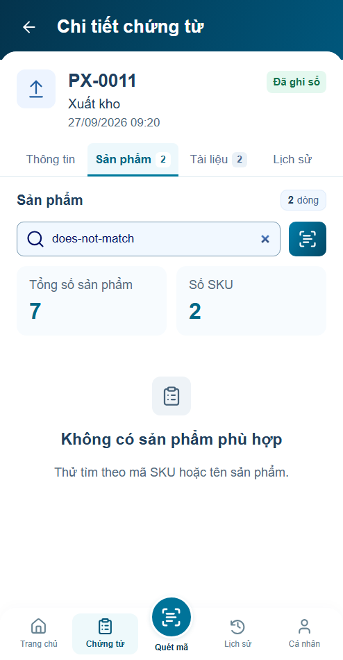
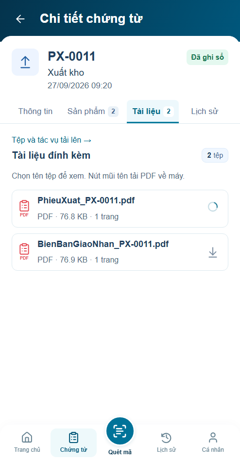
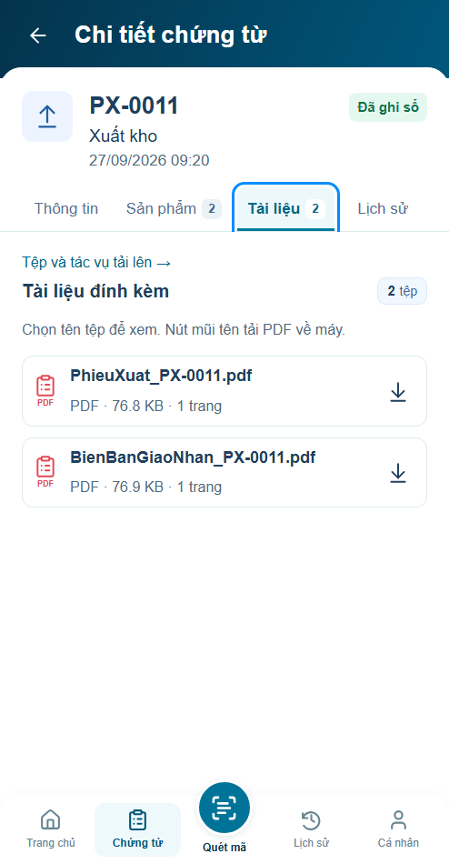

Chứng từ · Rà soát r10
5 lỗi tái hiện được đã sửa, bổ sung kiểm focus tải file.26 nhóm browser đạt trong preview; visual chờ review. Chromium,494×950,DPR1.
Mã dài không làm giãn cả danh sách
Trước sửaSau sửa r10
Số dòng khớp kết quả tìm sản phẩm
Trước sửa
Sau sửa r10 Thông báo copy đúng ký tự
Trước sửaSau sửa r10
PDF chậm có phản hồi và Back có thể hủy
Trước sửaSau sửa r10
Kiểm tra các màn sau sửa
Danh sáchThông tinTài liệu
Lịch sửTạo chứng từTimeout tải file